STONX
BIO
Drum & Bass duo STONX (Ollie Barron & James Clarke) combined with the sole purpose of creating HARD hitting music. 2019 marked the release of their Debut mini EP "TACTICAL BASS RESPONSE UNIT" a Hard Hitting Drum & Bass EP full of thumping drums and wobbly basslines, aswell as their Original Christmas SONG " IT's CHRISTMAAAS" an onslaught of sleigh bells and BASS
Releases
Click for links
 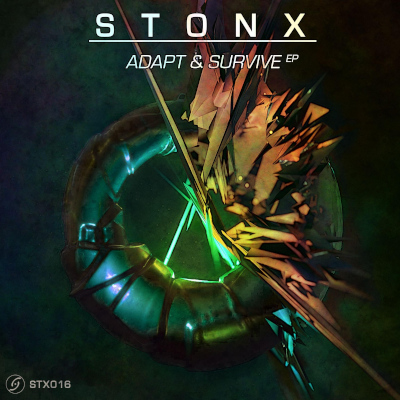
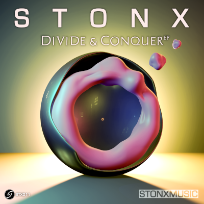
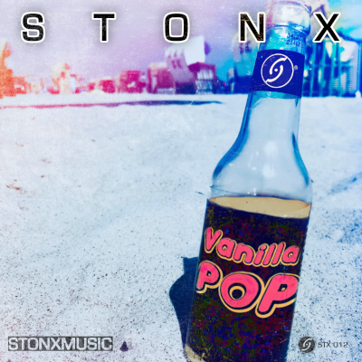
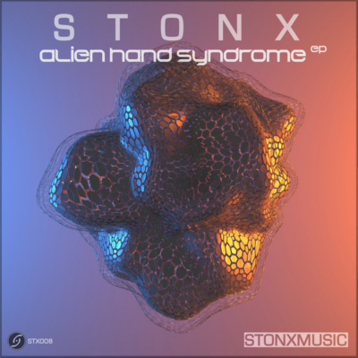
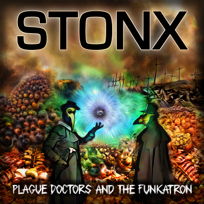
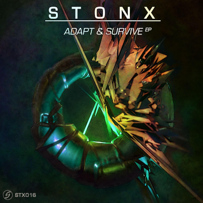
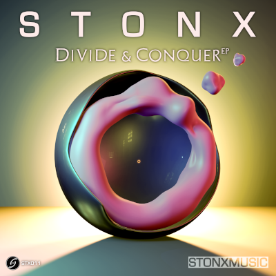
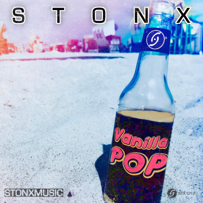
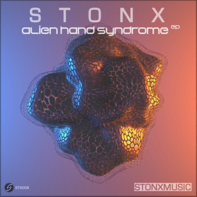
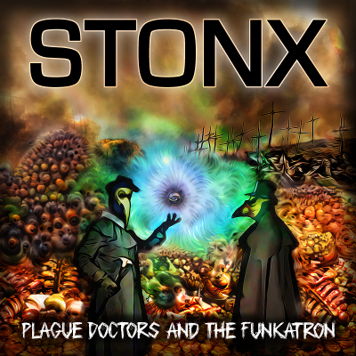
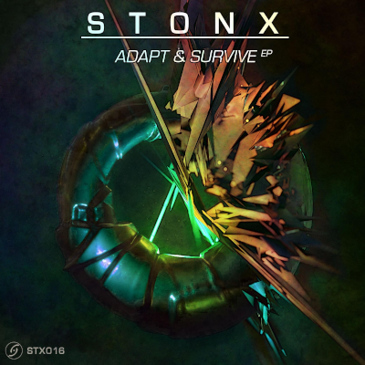
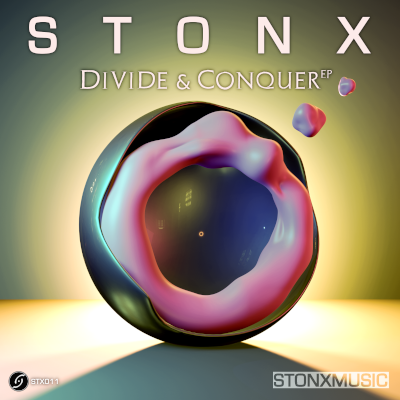
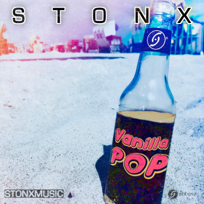
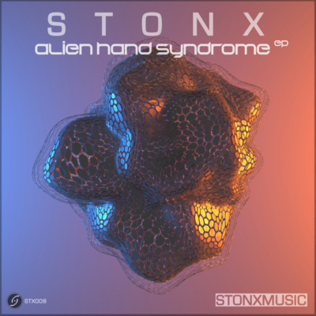
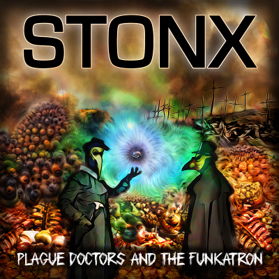